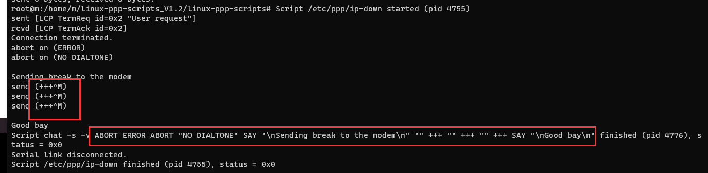

About PPP
ppp won’t occupy an USB interface descriptor.
ppp is one way the modules to set up data call on the data link layer. Normally the modules will use the USB interface 3 (you can call it ttyPPP port, or ttyModem port, it will be shown as a modem in the devmgmt on Windows OS.) to start a ppp connection.
Point - to - Point Protocol (PPP) is a communication protocol of the data link layer that is used to transmit multiprotocol data between two directly connected (point-to-point) computers. It is a byte - oriented protocol that is widely used in broadband communications having heavy loads and high speeds. Since it is a data link layer protocol, data is transmitted in frames. It is also known as RFC 1661.
PPP kernel configuration
You should enable the
CONFIG_PPP_DEFLATE=y
CONFIG_PPP_FILTER=y
CONFIG_PPP_MULTILINK=y
CONFIG_PPP_ASYNC=y
CONFIG_PPP_SYNC_TTY=y
Then please check whether /dev/ppp exists.
How to get the PPPD
You need the pppd and the chat.
Debian/Ubuntu OS
Debian System
sudo apt-get install ppp
quectel-pppd.sh
copy the quectel-chat-connect quectel-chat-disconnect quectel-ppp to /etc/ppp/peers
modify the quectel-ppp and quectel-chat-connect
execute "pppd call quectel-ppp &"
cross compile the pppd
follow the http://www.linuxfromscratch.org/blfs/view/6.3/basicnet/ppp.html
pppd
https://ppp.samba.org/download.html
http://samba.org/ftp/ppp/ppp-2.4.4.tar.gz
pppd is based on libcap.
libpcap-0.9.6 ---> do PPP filtering
Linux-PAM-0.99.10.0 ---> authenticate incoming calls using PAM
Linux ATM ---> pppoatm.so
PPP support (CONFIG_PPP), the asynchronous line discipline (CONFIG_PPP_ASYNC), the driver for your serial port device and/or the PPP over Ethernet (PPPoE) protocol driver (CONGIG_PPPOE) must be compiled into the kernel or loaded as kernel modules. Udev doesn’t load the ppp_generic and pppoe modules automatically, they must be mentioned in the /etc/sysconfig/modules file.
wvdial
wvdial
Exit status values.
#define EXIT_OK 0
#define EXIT_FATAL_ERROR 1
#define EXIT_OPTION_ERROR 2
#define EXIT_NOT_ROOT 3
#define EXIT_NO_KERNEL_SUPPORT 4
#define EXIT_USER_REQUEST 5
#define EXIT_LOCK_FAILED 6
#define EXIT_OPEN_FAILED 7
#define EXIT_CONNECT_FAILED 8
#define EXIT_PTYCMD_FAILED 9
#define EXIT_NEGOTIATION_FAILED 10
#define EXIT_PEER_AUTH_FAILED 11
#define EXIT_IDLE_TIMEOUT 12
#define EXIT_CONNECT_TIME 13
#define EXIT_CALLBACK 14
#define EXIT_PEER_DEAD 15
#define EXIT_HANGUP 16
#define EXIT_LOOPBACK 17
#define EXIT_INIT_FAILED 18
#define EXIT_AUTH_TOPEER_FAILED 19
#ifdef MAXOCTETS
#define EXIT_TRAFFIC_LIMIT 20
#endif
#define EXIT_CNID_AUTH_FAILED 21
modem hangup
It’s not easy to judge the reason of exit_Hangup.
Sometime it is bug of the module.
Quectel need the modem log to analyze the root cause.
There is a application scenarios we will catch the modem hangup.
The first time the ppp dial up OK. And once we shutdown the pppd process, we can not dial up again. We need to reset the module at that time.
I conclude those attention:
1. Kill the prorcess by "killall pppd" works fine, but "kill -9 ${PID}" will not.
2. killall will show

and you'll see the ppp end up normally.
3.kill -9 ${PID} you can see nothing about how the pppd process ends up.
the difference between SIGINT,SIGTERM,SIGHUP
to be done..
waiting …
More about PPP protocol
Point to Point Protocol(PPP) by vkota1.@sycamores.indstate.edu